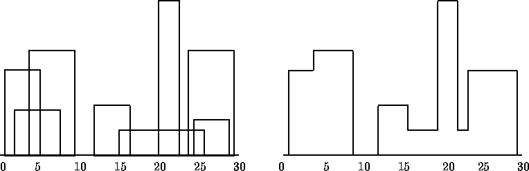

2013-07-01: The Skyline Problem in Racket
The source for this post is online at 2013-07-01-skyline.rkt.
A student of mine pointed me at a challenge problem on a code competition site. I decided to do it in as little space as possible, but without sacrificing too much readability. I ended up with 44 lines and 1240 characters.
-
1 Problem Specification
The problem is to take a list of building specifications and return a skyline drawing. A building specification is a left position, height, and right position. For example,
(define in '(( 1 11 5) ( 2 6 7) ( 3 13 9) (12 7 16) (14 3 25) (19 18 22) (23 13 29) (24 4 28)))
is a list of eight buildings. A skyline drawing is a list of points that will be connected by interleaving horizontal and vertical lines. For example,
(define out '(( 1 11) ( 3 13) ( 9 0) (12 7) (16 3) (19 18) (22 3) (23 13) (29 0)))
are the nine points that when connected, in order, draw the skyline. This corresponds to the following image:

This is challenging because you must detect when one building is partially or totally obscured by another building.
(check-equal? (skyline in) out)
The problem has the property that the input list can be rearranged or have any part duplicated any number of times and have the same output:
(for* ([i (in-range 10)] [j (in-range 1 10)]) (check-equal? (skyline (shuffle (append* (build-list j (λ (_) in))))) out))
2 Solution Technique
My solution is to use a priority queue to visit the building edges in order of left to right. As I visit each edge, whether it is a building start or end, I do a different thing.
When a building starts, I add it to my set of active buildings, which are ordered based on height. If the building is higher than the current highest building, then I output a drawing point connecting the building’s left side to the last building.
When a building ends, I remove it from the active set. if it was the highest building, then I output a drawing point connecting the building’s right side to the next highest building.
3 Program Technique
While this solution idea is pretty simple, the program uses some clever tricks to limit the size of solution and has to deal with one data-structure annoyance. I’ll point these out as we go.
The active building set is a heap where we order them using > and the cadr (or second) element, which is the height. I initialize the set with the ground.
Although it is cute to have the ground be infinitely to the left and right, it doesn’t actually matter because we’ll never look at those values. In my short implementation, I use 0 because it is shorter than these or #f.
Since this is a heap, I cannot only remove the maximum height building, but in the algorithm I need to remove arbitrary elements as I see them. So, I create a set of "visited" buildings which are pending removal.
(define V (make-hasheq))
This set can be an eq? hash-table, because we want to remove specific buildings and not buildings isomorphic to others. This allows the input to be duplicated arbitrarily.
The next data-structure needed is the queue of building start/end events. This queue will hold pairs where the car is the sorting key and the cdr is a function that executes the appropriate action when that event triggers.
(define E (make-heap (lift < car))) (for ([b (in-list input)]) (heap-add! E (cons (car b) (start b))) (heap-add! E (cons (caddr b) (end b))))
For each building in our input, we add two events to the queue. The first, sorted by car (or first) of the building, i.e. the left position, is the starting event. The second is the end event and based on the right position, i.e., the third (or caddr) of the data-structure.
Once the queue is initialized with all these events, we run each function in order. Both functions use the current maximum building height, so I calculate it once before calling them, to save duplication in each function body:
Recall that E contains pairs where the cdr is the function and A contains buildings where cadr (second) is the height.
All the interesting stuff happens inside of start and end, of course. They both will record their drawing points in the D list. However, it is convenient to create the drawing points from left to right, stored in reverse, so we have to reverse them when we return.
(define D '())
(reverse D)
Now that we know that, here’s what to do when a building starts:
(define ((start b) O) (heap-add! A b) (when (> (cadr b) O) (set! D (cons (list (car b) (cadr b)) D))))
We always add the building to the active set and if its height (cadr/second) is greater than the current highest building (O), then we add a drawing point from it’s left side (car/first) to its height (cadr/second).
It’s more complicated when a building ends:
(define ((end b) O) (hash-set! V b 1) (while (hash-ref V (heap-min A) #f) (heap-remove-min! A)) (define N (cadr (heap-min A))) (unless (= O N) (set! D (cons (list (caddr b) N) D))))
First, we add the building to the visited set. Then, we remove the minimum (maximum) element of the active set until it is no longer in the visited set. Now, there is potentially a new maximum height (which is the minimum element of the heap). We extract it and get the height (the cadr/second). If the old is the same as the new, whether because there was no change or because the new building happens to be the same height, we do nothing. But if they are different, then we add a drawing from the right side of the building (caddr/third) to the new maximum height.
And that’s it! The full version is just 44 lines and 1240 characters, including the test cases. If I wanted to be even shorter, I’d rename start, end, and lift, remove the while macro and the in-list from the first for, and maybe a few other things. I think this is a fair balance between density and understandability.
4 Yo! It’s almost time to go!
But first let’s remember what we learned today!
You can write dense, potentially obfuscated code, in Racket to get small character counts.
Closures are a nice way to remove if statements by Godel-encoding the operation you would do after testing a condition.
Heaps are awesome data-structures.
If you’d like to run this exact code at home, you should put it in this order:
(require data/heap) (define (skyline input) <active-set> <visited-set> <init-D> <start> <end> <events> <run-events> <return-D>) (define (lift < f) (λ (x y) (< (f x) (f y)))) (define-syntax-rule (while C B) (let L () (when C B (L)))) (require rackunit racket/list) <input> <output> <basic-test> <complex-test>